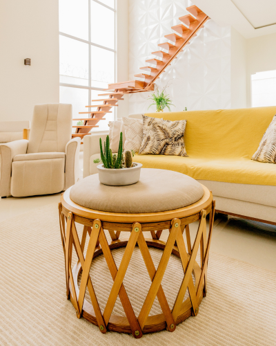

O que fazemos
A i-design cria projetos arquitetônicos modernos e funcionais, sempre prezando por um design clean. Trabalhamos com planejamento residencial e comercial, modelagem 3D e consultoria em arquitetura.
Projetos Arquitetônicos

Desenvolvemos projetos arquitetônicos sob medida, combinando estética e funcionalidade para criar espaços que atendem às suas necessidades e estilo de vida. Cada projeto é único e reflete a visão do cliente de maneira inovadora e sustentável.
Interiores
Nossa abordagem para design de interiores é baseada na simplicidade e sofisticação. Criamos ambientes que proporcionam conforto e elegância, utilizando cores neutras, formas limpas e materiais de alta qualidade para promover uma sensação de paz e organização.
Modelagem 3D

Através da modelagem 3D e renderizações realistas, oferecemos uma visualização precisa e detalhada de cada projeto. Com isso, você pode explorar e entender como os espaços serão antes mesmo da execução, garantindo que tudo esteja de acordo com suas expectativas."
Consultoria

Nossa consultoria em planejamento urbano e reformas oferece soluções práticas e criativas para melhorar e otimizar espaços, sejam urbanos ou residenciais. Trabalhamos para transformar ideias em realidades funcionais, com foco na eficiência, sustentabilidade e aproveitamento máximo do espaço.